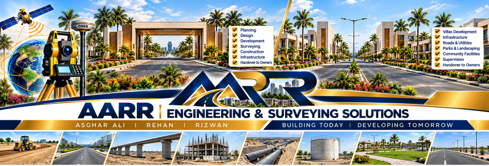

Land Surveying & Mapping
Land measurement, boundary support, levels, existing conditions, city mapping, development surveys and as-built information.
LAND SURVEYING • DESIGN • DEVELOPMENT • INFRASTRUCTURE
AARR connects accurate land information with practical engineering, coordinated development, construction support, completion documentation and final handover.
A complete client-facing service structure covering land, design, residential development, infrastructure, construction support and organized project completion.
Land measurement, boundary support, levels, existing conditions, city mapping, development surveys and as-built information.
Land development, residential, structural, road, infrastructure, water, sewerage, drainage and hydraulic solutions.
Planning, design, structural design, construction support, finishing coordination and complete owner handover.
Planning, infrastructure, development, construction, supervision, testing, completion and handover.
City mapping, roads, bridges, sewerage, drainage, water supply, hydraulic works and existing infrastructure.
Construction support, supervision, testing, as-built documentation, completion and final handover support.
AARR provides a coordinated residential pathway from site information and planning through design, structure, construction support, finishing and owner handover.
AARR connects the major stages of development into one coordinated project pathway.
Supporting accurate information, planning and engineering solutions for existing cities, new developments and infrastructure projects.
Mapping, spatial information, levels, elevation control and existing-development surveys.
Route surveys, road planning, development support and infrastructure documentation.
Network planning, routing, levels, existing-condition verification and completion records.
Water supply, hydraulic studies, route development and infrastructure support.
Bridge surveys, as-built information, canal works and design support.
Verification and documentation of completed or existing infrastructure and development.
Asghar Ali • Rehan • Rizwan
Building Today | Developing Tomorrow

Supervision / Design Support Experience with Leading Consultants — NOT PARTNERSHIPS.
A planned digital workspace for civil engineering calculations, surveying workflows, BOQ preparation and technical documentation. The modules below describe the intended product roadmap; AI processing and user accounts are not yet connected.
Survey data workflows, coordinate checks, mapping support and field-report preparation.
PLANNED MODULEMeasurement sheets, quantity take-offs, rate analysis and draft BOQ preparation.
PLANNED MODULERoad design support, drainage, water supply, sewerage and infrastructure reports.
PLANNED MODULEDesign-workflow assistance, calculation organization and review checklists.
PLANNED MODULEDaily progress, inspection records, material demands and site documentation.
PLANNED MODULEA future chat workspace for engineering questions, drafting and document support.
PLANNED MODULETell AARR about your private house, villa, housing scheme, township, road, bridge, water, sewerage, industrial, hospital or infrastructure project.